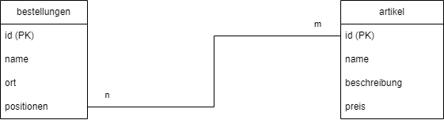

Datenbanken und ihre Tabellen kann man sich wie Listen oder Excel-Tabellen vorstellen.
Wenn du nur eine Adressliste mit 10 Leuten hast, brauchts du sie wahrscheinlich nicht. Aber eine Firma mit tausenden von Kunden, und millionen von Bestellungen wird froh sein, wenn diese Daten in einer Datenbank stehen.
Datenbanken können Daten aus verschiedenen Tabellen verknüpfen. Zum Beispiel die Namen aus einer Tabelle mit Orten aus einer anderen Tabelle.
Ermittlung der Informationsstruktur: Die Datenbank soll einen Ausschnitt aus der realen Welt (auch als „Miniwelt“ bezeichnet) im Rechner abbilden. Diese Abbildung erfolgt durch die Beschreibung der Daten. Dazu ist der Informationsbedarf der Benutzer zu ermitteln und zu strukturieren. Das Ergebnis dieses ersten Schrittes – auch als Spezifikations- und Anforderungsanalyse bezeichnet – ist eine informelle Beschreibung des Fachproblems.
Aufstellung des semantischen Modells: Ziel des konzeptionellen Entwurfs ist die formalisierte Beschreibung des betrachteten Sachverhalts. Es existieren verschiedene Ansätze zur Erzeugung einer solchen Gesamtsicht. Das bekannteste Modell ist das so genannte Entity Relationship Model (ER-Modell). Eine Erläuterung dieses ER-Modells folgt später. Das Ergebnis dieses Schrittes ist das Fachkonzept der Datenbank.
Erstellung des logischen Datenmodells: Ziel ist die Übertragung des semantischen Datenmodells in ein logisches Datenmodell, z. B. in ein relationales Datenmodell (Tabellenform). Diese Phase umfasst zwei Schritte: Im ersten Schritt muss eine Transformation des konzeptionellen Schemas (ER-Modell) in das Datenbankschema erfolgen. Dieser Schritt ist mithilfe von Software automatisierbar. Im zweiten Schritt erfolgt eine Optimierung des relationalen Schemas, z. B. die Durchführung einer Normalisierung der Tabellenstruktur (Abschnitt: „Optimierung: Normalisierung des Datenmodells“).
Implementierung der Datenbank: Am Ende dieser Phase sollte die leere Datenbank existieren. Dazu sollte das logische Modell unter Verwendung einer Datendefinitionssprache (z. B. SQL) in ein konkretes Datenbankschema übersetzt werden. Es müssen Datentypen, Wertebereiche, Relationen und Sichten festgelegt werden.
| Definition | Funktion | |
|---|---|---|
| DBS Datenbank-system |
System zur elektronischen Datenverwaltung | große Datenmengen effizient, widerspruchsfrei und dauerhaft speichern, benötigte Teilmengen in unterschiedlichen, bedarfsgerechten Darstellungsformen, für Benutzer und Anwendungsprogramme bereitstellen |
| DBMS Datenbank-management-system |
Software, die Daten in der DB verwaltet | Speichert, verwaltet und nutzt Daten in der DB |
| DB Datenbank |
Strukturierte Sammlung von Daten | Speichert Daten |
Eine 1:1-Beziehung weist meist darauf hin, dass man diese Daten in einer Tabelle zusammenführen kann. Warum macht man das dann nicht? Gründe können Sicherheit oder Performance sein. Eine Tabelle ist leichter zu sichern als eine Spalte.
Ein Ort aus der Tabelle Orte kann in mehreren Adress-Einträgen in der Tabelle Adresse vorkommen.
Kommt z.B. bei Bestellvorgängen oder Buchungen von Räumen vor. Diese Beziehung wird meist mit einer Zwischentabelle aufgelöst.
Die Beziehung oben kann man wie folgt auflösen: